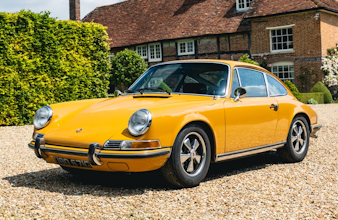
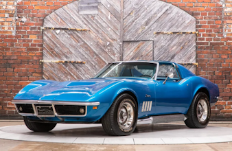
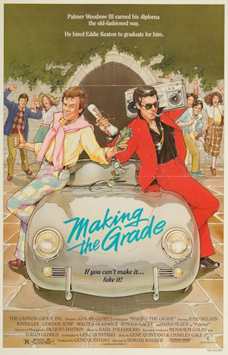

Welcome to my Web Page!
About Me
Hello, and welcome to my website! My name is Bradley, and I'm currently majoring in an Associate's in Computer Programming and Analysis, with an Associate's degree in Business Entrepreneurship from Miami-Dade College. I was born and raised in Miami until 2021 where I moved to Orlando where I currently reside.
I've been using computers ever since I was very young, and my first experience with a computer was from a relative's, which back then had Windows 2000 installed.
My first ever personal computer was back around 2004 when it was bought as a home computer to be used by anyone in the household, and it had the latest Windows XP operating system.
Ever since then, I've spent most of my life using a computer, whether it was Microsoft or Macintosh.
Fun Facts About Me
My current desktop is an OMEN by HP Obelisk gaming desktop. I own five cats, and a Shih Tzu dog. My first ever car was a 1991 Chevrolet Corvette convertible, and I plan for my second car to be a classic car, preferably with a manual transmission. My current life goals are to join the US Air Force, start my own small business, go sailing, and collect tons of classic cars, as well as travel to Japan and Italy.


I have too many favorite automobiles to list, but if I had to pick, my favorite Italian car is a Ferrari Dino, my favorite German car is a Porsche 911 classic, and my favorite American car is the C3 Corvette 68-72.
.jpg)
My favorite film is "Twelve O'Clock High," released in 1949 and stars notable classic Hollywood actor Gregory Peck as Frank Savage, a Brigadier General who takes command of a B-17 bomber unit hit with low morale in an attempt to get the men back into fighting shape.

My other favorite film is "Making the Grade" that was released in 1984, which revolved around a rich spoiled preppy student that's been expelled from other elite prep schools, who pays a street-smart hustler (played by Judd Nelson, one year before he made it big in the successful film "The Breakfast Club") to take his place in attending classes and graduating while he travels to Europe. Although not fondly remembered nowadays for its dull story, below-average acting, and dated 80s trends, I still found the movie charming, and had an overall pleasant experience watching it.
| 1 | 2 | 3 | 4 | 5 |
| 6 | 7 | 8 | 9 | 10 |
| 11 | 12 | 13 | 14 | 15 |
| 16 | 17 | 18 | 19 | 20 |
Recommended Websites
Youtube: An online video sharing website where users can upload their own videos and view uploads from other users.
Google: A search engine that was launched in 1998 and still stands as the most visited sites in the world!
Neocities: A free web hosting service that aims to bring back the old days of Geocities, which was very popular in the 1990s and allowed users to host and design their own websites.